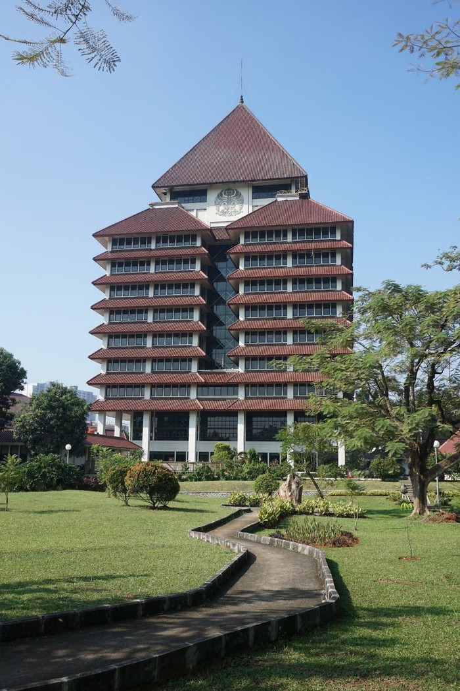

Universitas Indonesia (UI)
Universitas Indonesia disingkat sebagai UI,adalah perguruan tinggi di Indonesia. Kampus utamanya terletak di bagian Utara dari Depok, Jawa Barat tepat di perbatasan antara Depok dan wilayah Jakarta Selatan, sementara kampus utama lainnya terdapat di Salemba, Jakarta Pusat. UI merupakan institusi pendidikan tinggi tertua di Indonesia. Beberapa perguruan tinggi negeri terkemuka di Indonesia seperti Institut Teknologi Bandung, Institut Pertanian Bogor, Universitas Airlangga, Universitas Hasanuddin, dan Universitas Negeri Jakarta pada awalnya merupakan bagian dari UI hingga kemudian memisahkan diri menjadi institusi tersendiri. UI juga merupakan salah satu dari tiga perguruan tinggi terbaik di Indonesia bersama dengan Universitas Gadjah Mada dan Institut Teknologi Bandung.
Cikal-bakal terbentuknya Universitas Indonesia adalah ketika pemerintah kolonial Belanda mendirikan sebuah sekolah yang bertujuan untuk menghasilkan asisten dokter tambahan yang memegang sertifikat untuk melakukan perawatan-perawatan tingkat dasar serta mendapatkan gelar Dokter Jawa (Javanese doctor). Secara resmi, UI memulai kegiatannya pada 2 Februari 1950 dengan presiden (saat ini disebut rektor) pertamanya Ir. R.M. Pandji Soerachman Tjokroadisoerio. Tanggal tersebut dijadikan hari kelahiran Universitas Indonesia
Sejarah
Sekolah Ilmu Kesehatan dan Vaksin (Opleiding van eleves voor de genees-en helkunde en vaccine) pada tanggal 2 Januari 1849 berdasarkan Surat Keputusan Gubernur Hindia Belanda. Ketika itu, pemerintah kolonial Belanda mendirikan sebuah sekolah yang bertujuan untuk menghasilkan asisten dokter tambahan. Pelajar di sekolah itu mendapatkan pelatihan kedokteran selama dua tahun. Lulusannya diberikan sertifikat untuk melakukan perawatan-perawatan tingkat dasar serta mendapatkan gelar Dokter Jawa (Javanese Doctor), bergelar demikian karena dokter ini hanya diberi izin untuk membuka praktik di wilayah Hindia Belanda, terutama di pulau Jawa. Pada tahun 1864, program pendidikan tersebut ditambah waktunya menjadi tiga tahun, dan pada tahun 1875 menjadi 7 tahun. Gelar yang diberikan pun berubah menjadi Dokter Medis (Medical Doctor).
Pada tahun 1898, pemerintah kolonial mendirikan sekolah baru untuk melatih tenaga medis, yaitu STOVIA (School tot Opleiding van Indische Artsen). Pendidikan di STOVIA berlangsung selama 9 tahun: 3 tahun setingkat SMP, tiga tahun setingkat SMA, dan tiga tahun lainnya setingkat Diploma. Banyak lulusan STOVIA yang kemudian memainkan peranan penting dalam pergerakan kemerdekaan Indonesia. Pada tahun 1927 mengubah status dan nama STOVIA menjadi GHS (Geneeskundige Hogeschool). Gedung pendidikan dan pelatihan kedokteran yang digunakan GHS menjadi gedung Fakultas Kedokteran UI saat ini. Banyak alumni GHS yang kemudian berperan besar dalam pendirian Universitas Indonesia.
Pada tahun 1924 pemerintah kolonial mendirikan RHS (Rechtshoogeschool te Batavia - Sekolah Tinggi Hukum di Batavia) yang bertujuan untuk memenuhi tenaga administrasi sipil rendahan. RHS inilah yang menjadi cikal-bakal Fakultas Hukum Universitas Indonesia.
Setelah kemerdekaan Indonesia dideklarasikan pada tanggal 17 Agustus 1945, Badan Pendidikan Tinggi Republik Indonesia (BPTRI) didirikan pada tanggal 19 Agustus 1945 di Jakarta. BPTRI memiliki dua fakultas (waktu itu disebut perguruan tinggi), yaitu Perguruan Tinggi Kedokteran dan Perguruan Tinggi Hukum/Kesusasteraan. Ketua BPTRI adalah Prof. dr. Sarwono Prawirohardjo. Perguruan Tinggi Kedokteran dibuka secara resmi pada tanggal 1 Oktober 1945. Pada tahun yang sama, institusi ini berhasil meluluskan 90 orang sebagai dokter. Ketika tentara kolonial Belanda kembali menguasai Jakarta pada akhir tahun 1945, BPTRI dipindahkan ke Klaten, Surakarta, Yogyakarta, Surabaya, dan Malang. Pada tanggal 21 Juni 1946 NICA mendirikan sebuah Nood Universiteit atau Universitas Sementara di Jakarta. Pada tanggal 21 Maret 1947, nama Nood Universiteit diganti menjadi Universiteit van Indonesie (UVI). Akhirnya, setelah Jakarta berhasil diambil alih kembali, pemerintah mengembalikan BPTRI ke Jakarta dan menggabungkannya dengan Universiteit van Indonesie, dan memberinya nama baru Universiteit Indonesia (UI).